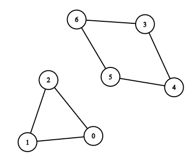
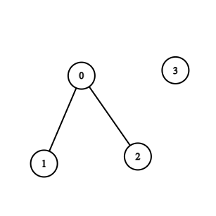

| Category | Difficulty | Likes | Dislikes |
|---|---|---|---|
| Algorithms | Hard | 611 | 19 |
phonepe | zomato
There is a bi-directional graph with n vertices, where each vertex is labeled from 0 to n - 1. The edges in the graph are represented by a given 2D integer array edges, where edges[i] = [ui, vi] denotes an edge between vertex ui and vertex vi. Every vertex pair is connected by at most one edge, and no vertex has an edge to itself.
Return the length of the shortest cycle in the graph. If no cycle exists, return -1.
A cycle is a path that starts and ends at the same node, and each edge in the path is used only once.
Example 1:

Input: n = 7, edges = [[0,1],[1,2],[2,0],[3,4],[4,5],[5,6],[6,3]]
Output: 3
Explanation: The cycle with the smallest length is : 0 -> 1 -> 2 -> 0 Example 2:

Input: n = 4, edges = [[0,1],[0,2]]
Output: -1
Explanation: There are no cycles in this graph.
Constraints:
2 <= n <= 10001 <= edges.length <= 1000edges[i].length == 20 <= ui, vi < nui != vi